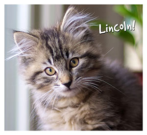

Cat Adoptions
Become a Kitten Foster Parent
It's Kitten Season! So many pre-weaned kittens need foster parents to bottle-feed them to maturity so we're attempting to sign up 100 new kitten foster parents before the festival. If you'd like to save a kitten, contact one of the local shelters below and receive 2 FREE TICKETS to the festival!
Local Shelters
-
Cat Town
Website: cattownoakland.org
E-mail: info@cattownoakland.org -
East Bay SPCA
Website: eastbayspca.org
E-mail: foster@eastbayspca.org -
Feral Cat Foundation
Website: feralcatfoundation.org
E-mail: feralhelp@feralcatfoundation.org
Phone: (510) 657-3709 -
Friends of the Alameda Animal Shelter
Website: alamedaanimalshelter.org
E-mail: infofaas09@gmail.com
Phone: (510) 337-8565 -
Hopalong Animal Rescue
Website: hopalong.org
E-mail: info@hopalong.org
Phone: (510) 267-1915 -
Island Cat Resources and Adoption
Website: icraeastbay.org
E-mail: info@icraeastbay.org
Phone: (510) 869-2584 -
Itty Bitty Orphan Kitty Rescue
Website: ibokrescue.org
E-mail: info@ibokrescue.org
Phone: (408) 414-3204 -
Maine Coon Adoptions
Website: mainecoonadoptions.com
E-mail: mainecoonadoptions.apps@gmail.com
Phone: (510) 710-9250 -
Oakland Animal Services
Website: oaklandanimalservices.org
Phone: (510) 535-5602 -
Pets and Pals
Website: petfinder.com
E-mail: hayflakes2@yahoo.com
Phone: (925) 915-9489 -
Tony La Russa's Animal Rescue Foundation
Website: arf.net
Contact: Contact Arf
Phone: (925) 296-3120
A Letter from Lincoln the Foster Kitten
Tens of thousands of me are born every year in the Bay Area.
A loving, caring foster home gets us on our way to living full, long lives. These foster homes need supplies to keep us healthy and thriving.
Pet Food Express is making is easy to get supplies to foster homes. During May, you can stop by any Pet Food Express store and donate essential kitten supplies or make a monetary donation to help support the hundreds of foster homes that we need to survive.
Pet Food Express works with 80 Northern California cat rescues and shelters during kitten season and year round to ensure that all the cats and kittens have what they need to be healthy and safe, and that they get into a loving and caring forever home.
Thank you for supporting Save a Kitten.
Love,

For more info about Save a Kitten, visit petfoodexpress.com/giving-back/save-a-kitten/